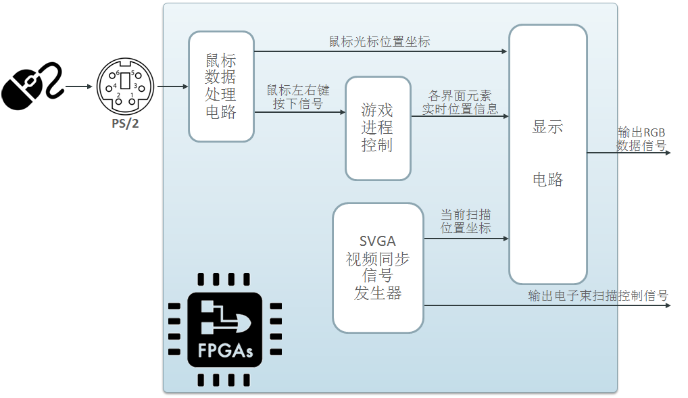

如下图所示，FPGA内部处理可以分为四大模块：
- PS/2接口连接鼠标，根据传输协议接收鼠标传来的数据信息，给出1)鼠标在显示屏上的位置信息，和2)左右键的按下信号；
- 游戏进程控制模块根据数据操作更新游戏的实时状态，负责提供不同关卡初始地图信息、箱子和搬运工的实时位置信息，返回给显示模块；
- SVGA视频同步信号发生器负责给出当前扫描的位置坐标，并返回给显示模块，同时，它也提供控制电子束扫描的信号传送给外部显示器；
- 显示模块负责对当前电子束扫描到的坐标进行分析判断，确定应该显示的内容(不同元素，如墙体、通道、箱子、搬运工、目标位置标记、信息区、命令按钮、鼠标光标等)，并向外部县市区输出RGB信号。

其中，鼠标数据接收处理以及进程控制较为容易理解，因此下面我们介绍其中两个模块，SVGA视频同步信号发生器和显示模块的详细设计。